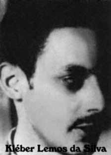

Kleber
Lemos
da Silva
CIRCUNSTÂNCIAS DA MORTE
Segundo o Relatório Arroyo, em princípios de julho, Kleber viajava acompanhado de José Toledo de Oliveira quando teve que interromper a viagem devido ao agravamento de uma ferida na sua perna. Enquanto aguardava o retorno do companheiro, um mateiro, referido apenas como Pernambuco, que acompanhava os militares, teria detectado sua presença. Ao tentar se defender, Kleber teria sido alvejado no ombro por soldados e conduzido a uma localidade chamada Abóbora, onde teria sido torturado. Camponeses afirmam tê-lo visto sendo arrastado pela região, amarrado a um burro, muito ferido, mas ainda com vida. O Relatório Arroyo narra também que Kleber teria, como forma de preservar seus companheiros, levado os militares até um velho depósito que não continha nenhuma informação relevante sobre as forças guerrilheiras. Diversos documentos militares citados pelo relatório da CEMDP e pelo Dossiê Ditadura confirmam a sua morte nessa ocasião. Entre eles, o Relatório da Operação Sucuri, de maio de 1974, e a Carta de instrução 01/72, Operação Papagaio, assinada por Uriburu Lobo da Cruz. Esta última consigna que o guerrilheiro teria sido preso pela Brigada de Paraquedistas no dia 26 de junho de 1972 e, três dias depois, teria sido “metralhado quando tentava fugir”. No Relatório da Manobra Araguaia, assinado pelo General Antônio Bandeira, em 1972, consta a morte de Kléber em 29 de junho de 1972 na região de Abóbora. iv Esta data também é indicada pelo Relatório do CIE, Ministério do Exército, de 1975,v e em outro documento deste órgão, de 1972, que aponta o estado do Pará como local de morte. vi O Relatório do Ministério da Marinha, encaminhado ao ministro da Justiça Maurício Corrêa em 1993, acrescenta que Kleber foi preso, em junho de 1972, “quando se encontrava acampado na mata portando uma espingarda 20 e um revólver 38”. vii Já o Relatório do Ministério do Exército, entregue na mesma ocasião, estabelece a morte do guerrilheiro, “no dia 29 jan 72, em confronto com uma patrulha” e afirma que foi “sepultado na selva, sem que se possa precisar o exato local”. viii A data apontada neste registro possivelmente contém um erro de digitação, tendo em vista que o primeiro confronto entre os guerrilheiros e as Forças Armadas data o mês de abril de 1972. Por fim, o Relatório da CEMDP assinala uma reportagem do jornal O Globo, de 6 de julho de 1996, que publicou uma foto de Kleber morto, tirada por um militar que teria participado da repressão à Guerrilha.
According to the Arroyo Report, at the beginning of July, Kleber was traveling with José Toledo de Oliveira when he had to interrupt the trip due to the worsening of a wound on his leg. While waiting for his companion's return, a woodsman, referred to only as Pernambuco, who accompanied the soldiers, reportedly detected his presence. When trying to defend himself, Kleber was shot in the shoulder by soldiers and taken to a town called Abóbora, where he was tortured. Peasants claim to have seen him being dragged through the region, tied to a donkey, badly injured, but still alive. The Arroyo Report also states that Kleber, as a way of preserving his companions, took the soldiers to an old warehouse that did not contain any relevant information about the guerrilla forces. Several military documents cited by the CEMDP report and the Ditadura Dossier confirm his death on that occasion. Among them, the Operation Sucuri Report, from May 1974, and Instruction Letter 01/72, Operation Papagaio, signed by Uriburu Lobo da Cruz. The latter states that the guerrilla was arrested by the Parachute Brigade on June 26, 1972 and, three days later, he was “machine-gunned when he tried to escape”. The Araguaia Maneuver Report, signed by General Antônio Bandeira, in 1972, states the death of Kléber on June 29, 1972 in the Abóbora region. iv This date is also indicated by the CIE Report, Ministry of the Army, from 1975,v and in another document from this body, from 1972, which points to the state of Pará as the place of death. vi The Ministry of the Navy Report, sent to the Minister of Justice Maurício Corrêa in 1993, adds that Kleber was arrested in June 1972, “when he was camped in the woods carrying a 20 shotgun and a 38 revolver”. vii The Report from the Ministry of the Army, delivered on the same occasion, establishes the death of the guerrilla, “on January 29, 72, in confrontation with a patrol” and states that he was “buried in the jungle, without the exact location being able to be specified”. viii The date indicated in this record possibly contains a typographical error, considering that the first confrontation between the guerrillas and the Armed Forces dates back to April 1972. Finally, the CEMDP Report highlights a report from the newspaper O Globo, on July 6, 1996, which published a photo of the dead Kleber, taken by a soldier who had participated in the repression of the Guerrilla.
Según el Informe Arroyo, a principios de julio, Kleber viajaba con José Toledo de Oliveira cuando tuvo que interrumpir el viaje debido al agravamiento de una herida en su pierna. Mientras esperaba el regreso de su compañero, un leñador, al que se hace referencia únicamente como Pernambuco, que acompañaba a los soldados, habría detectado su presencia. Al intentar defenderse, Kleber recibió un disparo en el hombro por parte de los soldados y fue llevado a un pueblo llamado Abóbora, donde fue torturado. Los campesinos afirman haberlo visto arrastrado por la región, atado a un burro, gravemente herido, pero todavía con vida. El Informe Arroyo también afirma que Kleber, como forma de preservar a sus compañeros, llevó a los soldados a un antiguo almacén que no contenía ninguna información relevante sobre la guerrilla. Varios documentos militares citados en el informe del CEMDP y en el Dossier Ditadura confirman su muerte en aquella ocasión. Entre ellos, el Informe Operación Sucuri, de mayo de 1974, y la Carta Instrucción 01/72, Operación Papagaio, firmada por Uriburu Lobo da Cruz. Este último afirma que el guerrillero fue detenido por la Brigada Paracaidista el 26 de junio de 1972 y, tres días después, fue “ametrallado cuando intentaba escapar”. El Informe de Maniobra de Araguaia, firmado por el general Antônio Bandeira, en 1972, constata la muerte de Kléber el 29 de junio de 1972 en la región de Abóbora. iv Esta fecha también está indicada en el Informe CIE, Ministerio del Ejército, de 1975,v y en otro documento de este organismo, de 1972, que señala al estado de Pará como lugar de la muerte. vi El Informe del Ministerio de Marina, enviado al Ministro de Justicia Maurício Corrêa en 1993, añade que Kleber fue detenido en junio de 1972, “cuando se encontraba acampado en el bosque portando una escopeta calibre 20 y un revólver calibre 38”. vii El Informe del Ministerio del Ejército, entregado en la misma ocasión, establece la muerte del guerrillero, “el 29 de enero de 72, en enfrentamiento con una patrulla” y señala que fue “enterrado en la selva, sin que pueda precisarse el lugar exacto”. viii La fecha indicada en esta ficha posiblemente contenga un error tipográfico, considerando que el primer enfrentamiento entre la guerrilla y las Fuerzas Armadas data de abril de 1972. Finalmente, el Informe del CEMDP destaca un reportaje del diario O Globo, del 6 de julio de 1996, que publicó una foto del muerto Kleber, tomada por un soldado que había participado en la represión de la Guerrilla.